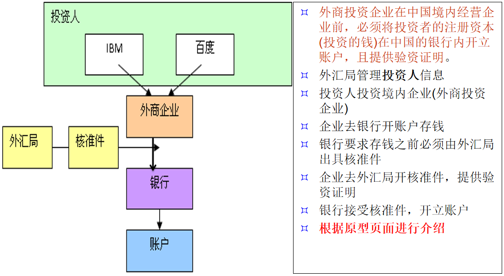
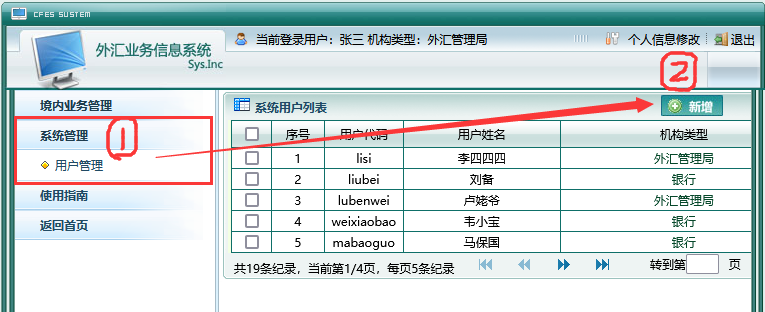
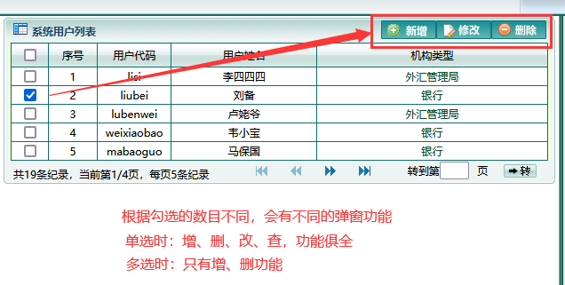

业务原理示意图 |
|  |
简单介绍 |
| 这是一个对外资企业的信息登记系统 |
| 企业对于这些巨额的外汇投资资金不能直接去银行进行存款 —— 银行不能收取来历不明的资金，谁知道你的钱是从哪里来呢？ |
| 所以，去银行存款之前，要有外汇局的“认证”，而这个“认证”就是去开核准证。 |
| 银行有了核准证，核对了企业和投资人的信息，才能对投资的资金进行存款 |
一、登记管理 |
1、企业投资人登记 |
| 登记哪家企业对你的公司进行了投资。并填写好这家企业的基本信息 |
2、企业信息登记 |
| 登记您的公司，以及有哪些企业对您的公司进行了投资。 |
二、核准管理 |
| 这就是所谓的“开核准证”了 |
三、银行登记管理 |
| 上面的内容完成以后（开好了核准证），就可以拿着核准证去银行进行查询验证了。 |
| 验证通过后，您可以在本银行存储公司的启动资金。 |
四、系统管理 |
| 本系统的系统用户管理中心，可以对系统用户进行增，删，改，查操作。 |
| 朋友们使用系统的时候，我恳求你们别删库（祈祷） |
| 用户删完了就进不了系统了，我就得去数据库后台去恢复了，略麻烦。 |
所以求玩别的可以，删库还是别删了（球球） |
新增系统账号 |
|  |
系统账号的增删改查 |
|  |